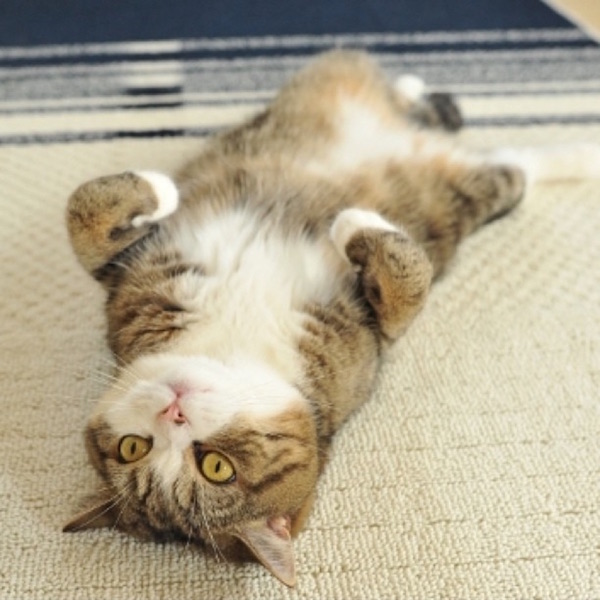
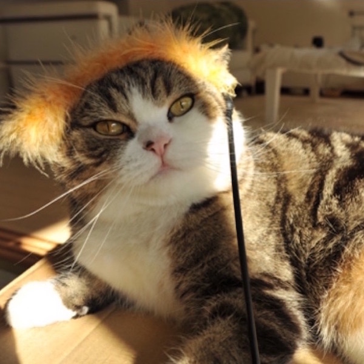
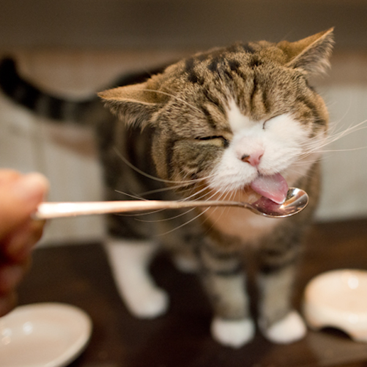
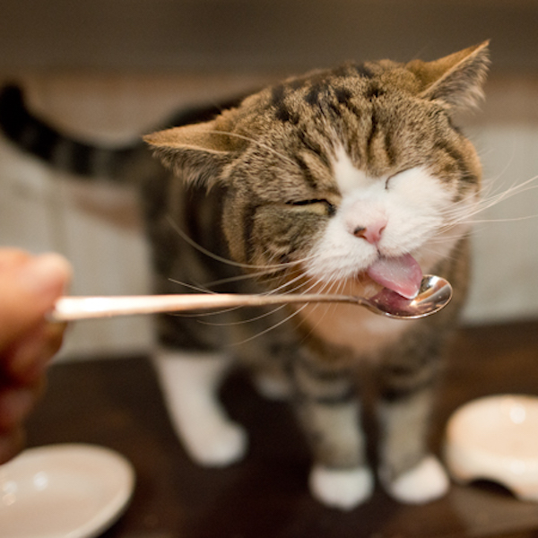

Breakpoints with Maru
These photographs were stolen from the Maru website. Because of how information is proliferated on the internet, Maru has become a viral sensation. Without the the world wide web, Maru would just be another Scottish fold cat in Japan.
Because time spent with a cat is never wasted, we will stare at cats for the next 30 minutes.


 
